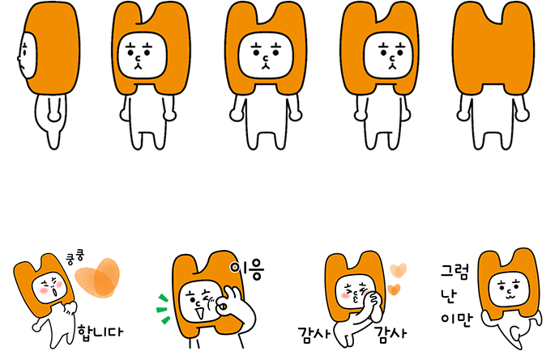
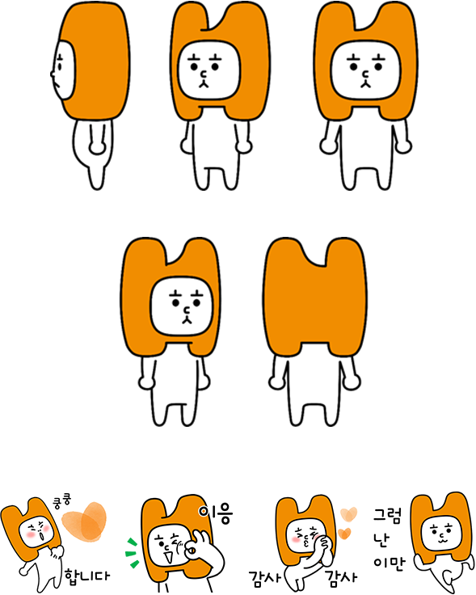
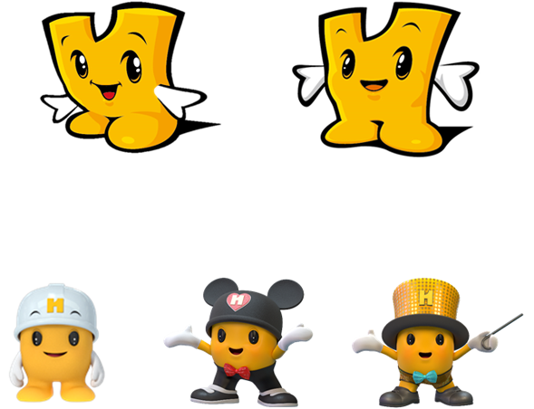
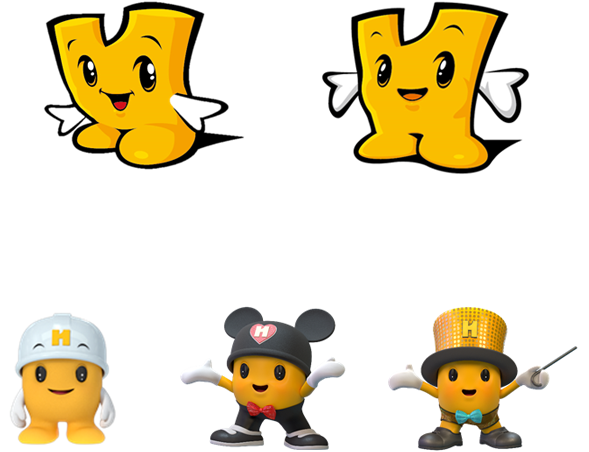

ㅎㄷㅎㅅ
ㅎㄷㅎㅅ


- 2020년 9월 탄생한 현대해상의 NEW 캐릭터
- 현대해상 CI를 상징하는 ‘H’ 형태의 커다란 머리와 현대해상의 초성 ‘ㅎㄷㅎㅅ’을 꼭 닮은 눈, 코, 입을 가졌어요.
- 2030 MZ세대와 가까이 소통하고자 등장한 귀요미 캐릭터로 쾌활하고 솔직 담백한 성격에 공감 능력까지 뛰어나답니다.
- 마음 상하는 일 없는지 항상 살피는 동그란 눈, 할 말은 하는 단호한 입이 귀여운 포인트!
- 무표정한 얼굴 뒤로 따뜻한 마음을 가진 겉바속촉 ㅎㄷㅎㅅ을 만나 보세요.
마음봇
마음봇


- 2017년 1월 탄생한 마음봇
- 현대해상이 늘 추구하는 ‘마음’의 소중함과 그 가치를 전달하려고 탄생한 캐릭터예요. ‘마음’이 없는 로봇이지만 로봇 특유의 호기심으로 인간이 가진 마음의 여러 모습과 진정성에 대해 고민하고 알고 싶어합니다.
- 사람들과 이야기 하는 걸 좋아해요. 특기는 챗봇이 되어 사람들이 궁금해 하는 질문을 해결하는 일이죠. 해결하고 싶은 질문이 있다면 챗봇 메뉴에서 마음봇을 찾아 주세요.
퍼스티
퍼스티
 

- 2000년 11월 탄생한 현대해상의 첫 캐릭터
- 현대해상 CI의 ‘H’ 형태를 기본 형태로, 고객 제일 주의와 서비스 품질 제일주의라는 현대해상의 가치를 담아 탄생한 캐릭터입니다.
- 고객을 항상 퍼스트(First)로 생각하는 퍼스티는 오랫동안 사랑받아 온 인기 캐릭터예요.
- 언제나 믿음직스럽고 친근한 고객의 친구, 퍼스티를 기억해 주세요.